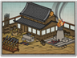

Basic Unit Statistics (can be modified by difficulty level, arts, skills, traits and retainers)
| Recruitment Cost | 800 | |
| Upkeep Cost | 200 | |
| Melee Attack | 12 | 34% |
| Charge Bonus | 15 | 30% |
| Bonus vs Cavalry | 0 | 0% |
| Range | 50 | 7% |
| Accuracy | 45 | 45% |
| Reloading Skill | 25 | 25% |
| Ammunition | 10 | 12% |
| Melee Defence | 2 | 5% |
| Armour | 6 | 40% |
| Morale | 12 | 24% |
Strengths & Weaknesses
- Very high missile damage.
- Good accuracy but slow reload rate.
- Average in melee.
- Vulnerable to massed foot missile units.
Requires
- Buildings: 

- Resources:

Description
This special cavalry unit is armed with the fearsome donderbuss, a musket with a short, flared barrel used to fire a hail of projectiles at extremely close range.
The donderbuss actually makes them an effective counter to many other cavalry at close range and, as might be expected, their firepower against other units is formidable. Like mounted gunners, donderbuss cavalry can move quickly across the battlefield and use skirmish tactics to stay out of trouble. Being samurai, they can defend themselves in close combat, but should not be sent into melee without good reason. Like many horsemen, they are vulnerable to fire from massed infantry archers. Historically, the term "donderbuss" was an early term used to describe what is now generally called a "blunderbuss." Literally meaning "thunder pipe", the name exactly describes the incredibly loud noise when it was fired. A forerunner of the shotgun, the donderbuss was intended to fire lead or brass balls or, when these ran out bits of metal, nails, stones or even coins. The bell-like muzzle was flared in order to increase the spread of shot, and also to make it easier to pour gunpowder down the barrel when on horseback or riding on a cart. The donderbuss barrel was much shorter than other weapons of the time to make it handier and easier to load. Eventually, in the West it was replaced in mounted use by the "dragon"; in Europe these were used by "dragoons", a military term still in use today.